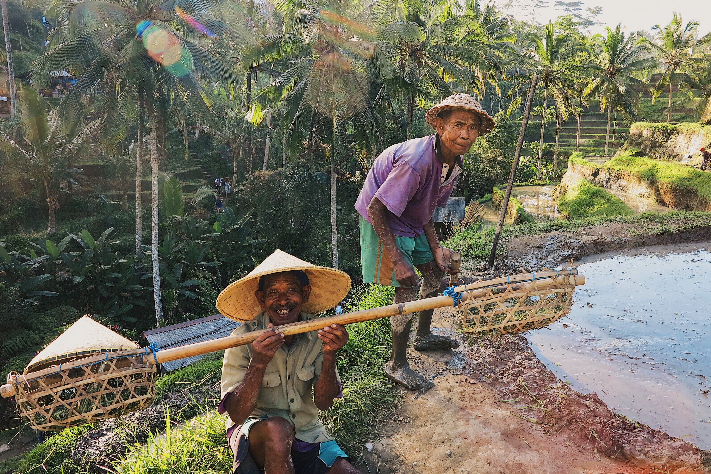

[시대에 등떠밀려 도전하는 융복합인재?]

이제야 세상이 어떻게 돌아가는지 조금은 알 것 같은 20대의 마지막.
대학교 1학년때 처음 나온 카카오톡이 어떻게 대학교의 라이프스타일을 통째로 바꾸는지 보면서, 시대가 급변한다는게 무엇인지 몸소 겪었습니다. 학생때는 경제를 좋아하는 문과생으로, 졸업 후 군대라는 거대 관료제 조직의 장교로, 전역 후 자유를 꿈꾸며 카페를 오픈해 바리스타로 일하면서, 늘 알 수 없는 불안함이 내 안에 자리하고 있었습니다. 하루하루 시간이 흐를수록 그 불안함이 조금씩 커지고 있다는 것을 느끼고 있는 요즘입니다. 초등학교의 코딩 교육이 의무화로 전환된 올해, 그리고 시간이 흐르고 코딩을 모르는 유일한 세대로 남을지도 모르는 91년생 문과생. 가끔 10년 20년 후 미래의 내 모습을 생각하면, 시대의 거대한 파도에 휩쓸려 저 깊은 심해에 갇힐지도 모른다는 불안이 생기기도 합니다.
분명 10년전에는 카카오톡이 없었는데, 카카오톡이 없는 시대가 상상이 안돼.
융복합인재라는 말은 사실 꽤 많이 들어왔습니다. 제가 졸업한 포항 변두리에 있는 작은 대학교에서도 융합인재양성을 목표로 전교생이 복수전공을 이수했고,(그때도 저는 경제와 경영을 복수로 전공했죠. 그때 컴공을 전공했어야했는데...😂) 장교로 근무할 때 박근혜정부의 창조경제에 발맞춰 협업의 가치가 필요하다는 한국협업진흥협회장의 강의도 숱하게 들었습니다. 융복합인재라는 말은 굉장히 그럴듯 해 보이지만, 저는 과학에는 왜인지 정이 가지 않았습니다. 그래서 사실 융복합인재라는 말을 많이 들어왔음에도 관심이 크지 않았죠. 특별히 싫어하는 것은 아니었지만 그저 인간과 사회에 대한 궁금증이 더 컸다고 해야할까요. 과학책을 보는 것보단 철학이나 종교책이 저에겐 더 재미있었습니다.
알쓸신잡에서 정확히 기억은 나지 않지만 유시민이 했던 말 중에 그런 말이 있습니다. '과학자는 21세기의 제사장이다.' 권력의 중심이 시대가 흐르면서 어디로 가고 있는지 그 방향을 보여주는 말입니다. 유발 하라리는 '초예측'에서 가까운 미래에 인공지능이 더 발전하면 대다수의 인간은 정치, 경제적 가치를 잃은 '무용계급'이 될 것이라고 말했구요. 그 외에도 최근에 본 '노동의 미래'라는 책이나 미래의 삶을 다룬 다른 책들을 굳이 꺼내지 않더라도 과학이 (특히 인공지능) 어떻게 우리의 삶을 바꿀 것인지는 쉽게 알 수 있을 듯 합니다. 당장 제 주변 문과생 친구들만 보더라도 이과생 친구들과는 온도차가 분명히 존재합니다.
등떠밀려 무엇을 한다는 것은, 사실 내가 꼭 이것을 해야겠다고 생각하지 않지만 어쩔 수 없이 타의로 한다는 의미를 내포합니다.
21세기의 제사장이 된 과학자들과 4차 산업혁명이 한창 진행중인 이 시대는 본의 아니게 저를 융복합인재의 길로 등떠밀었고, 저는 그 시대에 등떠밀려 자의반 타의반으로 융복합인재에 도전해보려고 합니다. 멋있어 보이려고 도전하는 것도 아니구요, 큰 돈을 벌고 싶어서 그러는 것도 아닙니다.
가슴속에서 점점 커지는 이 불안한 마음을 지금 잡지 못하면 어쩌면 나중에는 정말로 후회할 지도 모르겠다는 생각때문이에요. 그래도 만약 제가 했던 경험들이 차곡차곡 쌓여 융복합인재가 될 수 있다고 생각하면, 입꼬리가 살짝 올라가긴 합니다. 이 알쏭달쏭한 아이러니 속에서, 시대에 등떠밀려 도전하는 융복합인재의 이야기를 한번 담아내 보겠습니다.